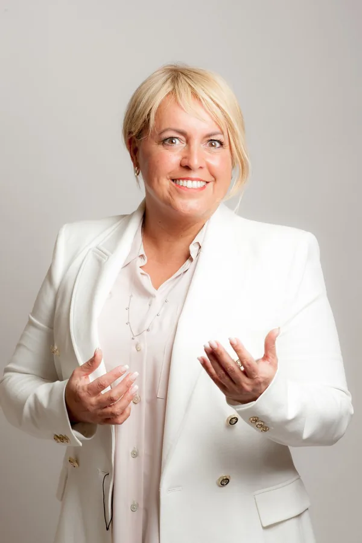

Dr.-Ing. Ann-Kathrin AndresenVerfahrenstechnikerin, Mentorin und Beraterin · Ing.-up
„Die Atmosphäre ist sehr herzlich, sehr direkt und sehr intensiv, aber wir lachen auch viel gemeinsam.“
Quelle: Videostimme auf claudiaconen.com
Aktuell: 7-Tage-Wirkungskraft-Challenge · Start 26. OktoberChallenge · Start 26.10. · Platz sichernTermin bestätigen
Für Geschäftsführung, Führungskräfte, HR, Vertrieb und Veranstalter.
HauptwegeFür Coaches, Trainer, Speaker, Berater, Autoren und Selbstständige.
HauptwegeClaudia gibt Unternehmensmomenten eine Stimme, eine Richtung und eine Wirkung.
Claudia buchenWorkshop, 90-Tage-Programm oder Sparring: vor Ort oder online.
FormateWer hier spricht und warum Stimme ihr Thema ist.
Hauptwege
Seit 37 Jahren als Coach und Trainerin unterwegs, heute auch als Keynote Speakerin.
Claudia kennenlernenEin Jubiläum, ein Abschied, eine Ehrung: An solchen Tagen erinnern sich Menschen nicht an Folien, sondern an Worte. Ob Festrede zum Firmenjubiläum, Laudatio bei einer Ehrung oder Ansprache zum Abschied: Claudia schreibt die Rede, hält sie – oder bereitet die Person vor, die selbst spricht.Vorschlag
Die Unternehmensrede würdigt und gibt Bedeutung – damit Menschen spüren, dass sie gemeint sind.Vorschlag
Woran sich später alle erinnern, ist das, was gesagt wurde.Vorschlag
Zwischen Ablaufplan, Gästeliste und Catering bleibt kaum Zeit, um zu überlegen, was eigentlich gesagt werden soll. Und genau das ist das Einzige, woran sich später alle erinnern.
Viele fürchten zwei Dinge: dass die Rede allgemein klingt und auf jedes Unternehmen passen würde. Und dass die Person, die sprechen soll, es nicht so sagen kann, wie sie es meint.
Beides lässt sich abnehmen.
Gedanken aus Claudias Seiten zu Reden, auf den Unternehmenskontext übertragen.Vorschlag
Eine gute Rede macht aus einem Termin einen Moment, über den im Unternehmen noch lange gesprochen wird. Gerade wenn KI Texte in Sekunden liefert, zählt, ob ein Mensch spürbar meint, was er sagt.Vorschlag
Menschen fühlen sich gemeint, nicht nur erwähnt.
Aus Daten und Jahreszahlen wird eine Geschichte, die dein Unternehmen erzählen kann.
Geschrieben für das Ohr, nicht für das Papier.
Wer selbst spricht, steht vorbereitet vorne und klingt nach sich selbst.
Jeder Anlass hat einen anderen Zweck. Die Rede richtet sich danach, was bei den Menschen im Raum ankommen soll.Kartentexte: Vorschlag
Die Geschichte des Unternehmens, erzählt über die Menschen, die sie geschrieben haben.
Eine Würdigung, die zeigt, dass jemand wirklich gesehen wurde, statt einer Liste von Verdiensten.
Ein Berufsleben in Worte fassen, mit Dank und mit den kleinen Geschichten, die alle kennen.
Ein neuer Standort, ein neues Gebäude: Die Rede sagt, wofür der Anfang steht.
Wenn das Team einen Menschen verliert, braucht es Worte, die tragen. Respektvoll und ohne zu glätten.
Ein Rückblick, der das Jahr würdigt, und ein Dank, der nicht nach Pflicht klingt.
Der Anlass braucht jemanden, der den ganzen Tag führt? Business- und Eventmoderation ansehen
Für die Person, die spricht: aus Gesprächen mit den Menschen, die den Anlass kennen. Für deinen Anlass geschrieben, nicht aus dem Regal.
Wenn eine Stimme von außen den Moment tragen soll: geschrieben und gesprochen aus einer Hand.
Wer selbst spricht, entwickelt die Rede mit Claudia und probt sie, bis sie nicht nach Vorlesen klingt.
Zuhören. Lebensgeschichten verstehen. Verantwortungsvoll formulieren. Sprechbare Texte entwickeln. Mit echter Präsenz vor Menschen stehen.
Offene Frage an dich: Welche der drei Wege (Rede schreiben, Rede halten, Führungskraft vorbereiten) bietest du für Unternehmen an? Bis zu deiner Antwort sind alle drei als Vorschlag markiert. Bitte bestätigen: Welche der drei Wege bietest du für Unternehmen an, und für welche Anlässe? Belegt sind auf deinen heutigen Seiten das Schreiben für Veranstaltungen, das Halten von Reden zum Firmenjubiläum und zum Abschied aus dem Berufsleben und die Vorbereitung von Menschen, die selbst sprechen. Honorar und Vorlauf: bitte von dir.
„Ich habe mit Claudia zusammen eine Rede erstellt und einstudiert, die ich vor einem technischen Publikum halte.“
Quelle: Videostimme auf claudiaconen.com
Ein Mitschnitt einer Unternehmensrede (Jubiläum, Ehrung, Abschied), die du gehalten oder geschrieben hast, mit Freigabe: bitte von dir.
„Die Atmosphäre ist sehr herzlich, sehr direkt und sehr intensiv, aber wir lachen auch viel gemeinsam.“
„Ob sie Menschen dazu bewegt, selber Texte zu verfassen und selber vorzutragen oder ob sie selbst spricht oder als Speaker auftritt – sie legt jedesmal ein unfassbares Engagement an den Tag.“
Bitte von dir: eine Stimme zu einer Rede bei Jubiläum, Ehrung oder Abschied, wörtlich und mit Freigabe für Namen und Logo.

Claudia Conen – Die Umsatzstimme ist Expertin für menschliche Wirkungskraft im KI-Zeitalter und arbeitet seit 37 Jahren als Coach und Trainerin. In eine Unternehmensrede bringt sie mit, was eine Rede braucht: das Gespräch, das die Geschichte findet, einen Text, der sich sprechen lässt, und eine Stimme, die auch in der letzten Reihe ankommt.Vorschlag
Das ist der Normalfall und kein Problem. Du musst nichts vorbereiten und nichts formulieren. Erzähl einfach, worum es geht und um wen. Das Ordnen ist Claudias Aufgabe.
Das kommt häufig vor. Dann spricht Claudia mit den Beteiligten getrennt. Die Rede muss nicht alles erzählen, und sie muss nicht alles glätten. Sie muss nur wahr sein.
Ja. Manchmal ist es besser, wenn die Geschäftsführerin oder der Geschäftsführer selbst spricht. Dann bereitet Claudia die Person vor und sorgt dafür, dass es nicht nach Vorlesen klingt.
Bitte von dir: Vorlauf für das Schreiben, für das Halten und für das Coaching einer Rede.
Bitte von dir. Auf deinen heutigen Seiten gilt sonst: Preis vor der Zusage, schriftlich.
Datum, Anlass und wer sprechen soll. Claudia meldet sich mit einer ehrlichen Einschätzung, ob sie die Richtige ist.Vorschlag
Gespräch vereinbaren